| 日付 | 2018年10月21日（日） |
|---|---|
| 山域 | 御坂･天子山塊 |
| メンバー | 家族（妻、長女・7歳、長男・5歳） |
| 山行形態 | 子連れ日帰り |
| アクセス | 車 |
| ルート (Map) | 西湖駐車場 (8:53) - (10:44) ブナ原生林の標識 - (11:27) 雪頭ヶ岳 - (11:40) 鬼ヶ岳 (12:34) - (13:37) 鍵掛峠 - (14:32) 林道 - (14:35) 沢で休憩 (14:46) - (15:00) 西湖いやしの里根場 (15:14) - (15:21) 西湖駐車場 |
本日は全国的な快晴予報。家族4人で山に出かけることにする。
家から遠くて緩い山か、家から近くてきつい山か、
どちらが良いか子供達に聞いてみると、なんときつい山が良いという。
普段は山を嫌がっているのに珍しいことだ。
といわけで、御坂山塊の鬼ヶ岳に行ってみることにする。
この季節は新雪の富士山を望むことができそうだ。
西湖の西端にある駐車場に車を停める。標高910m。
この辺りは無料の駐車場が多くて助かる。
息子は全然近くなかったと言っている。朝っぱらから中央道の事故渋滞があり
2時間半かかったので、なかなか正しい指摘だ。
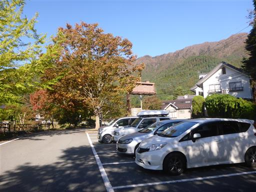
本日は見事な快晴。西湖に逆さ富士が映っている。
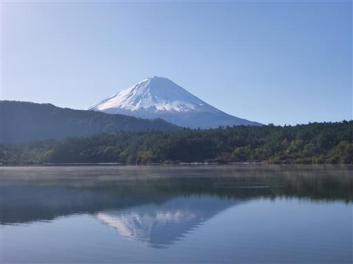
湖から朝霧が発生している。幻想的な風景だ。
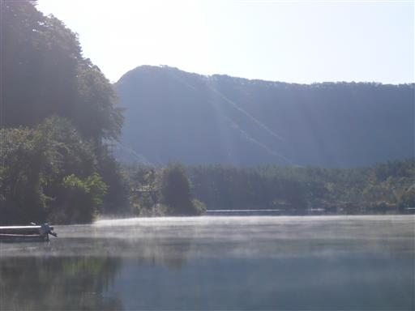
子供達は富士山には目もくれず、地面で何か遊んでいる。
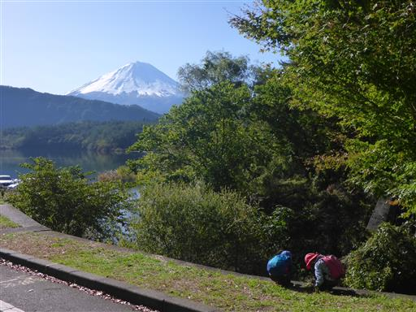
山へは漁民荘の前の細い車道に入っていく。
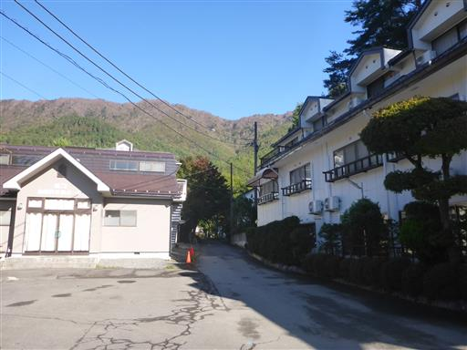
御坂山塊の稜線。あまり特徴のない山々が並んでいる。
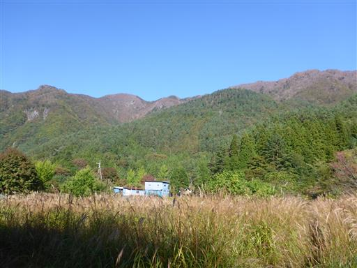
西湖キャンプ場。10月末でかなり寒いと思うのだが、まだまだキャンパーの数は多い。
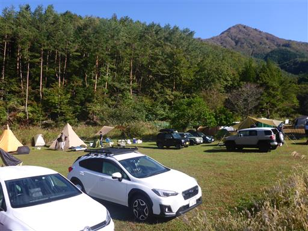
倒木。まだ新しい。
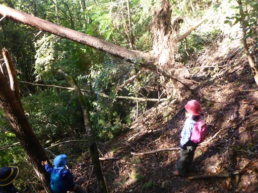
植林地帯の中を登って行く。
まだ登りはじめなのに息子は「疲れた」を連発している。
全然足が前に進まない。昨日の元気はどこに行ったのだろう？
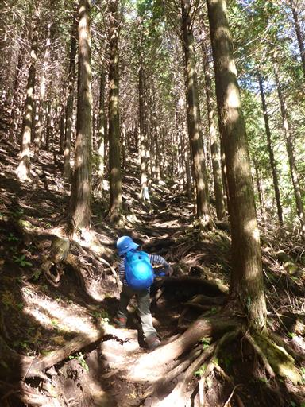
この辺りは紅葉にはまだ早い。もっと標高を上げるときれいな紅葉が見られそうだ。
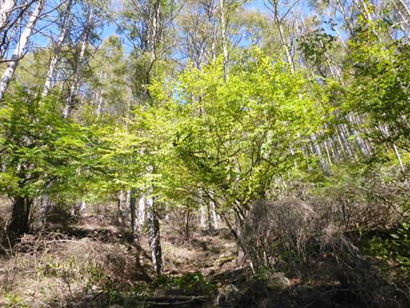
倒木を乗り越える。枝が多くて案外嫌らしい場所だ。
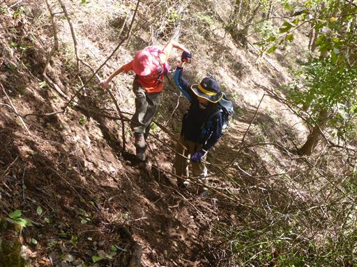
再び倒木を迂回。倒木だらけだ。台風の影響だろうか？
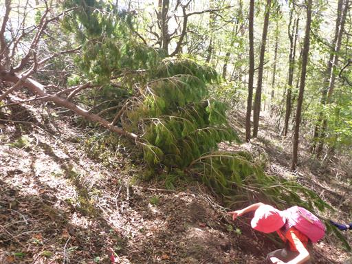
だんだんと周囲の木に紅葉が見られるようになってくる。
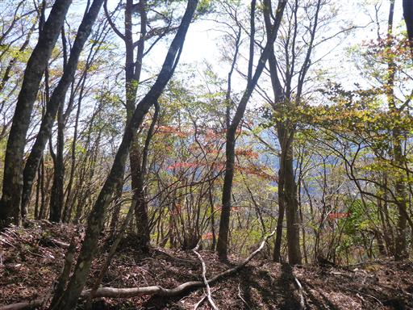
ブナの大木が3本。地図には「ブナ原生林」標識がコースタイムのポイントになっているため、
そろそろ出てくるかと期待しながら登って行く。
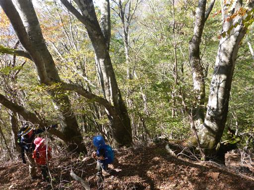
そこから数分で「ブナ原生林」の標識に到着。
息子の足が完全に止まっているため、大福を食べて栄養補給する。
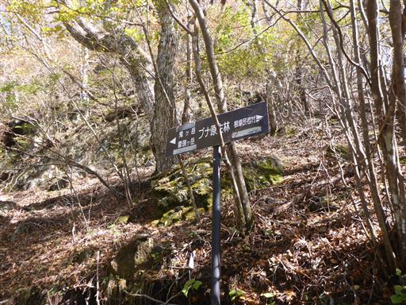
ようやく足取りが軽くなってくる。
周囲は美しい樹林帯だが、単調と言えば単調な道だ。
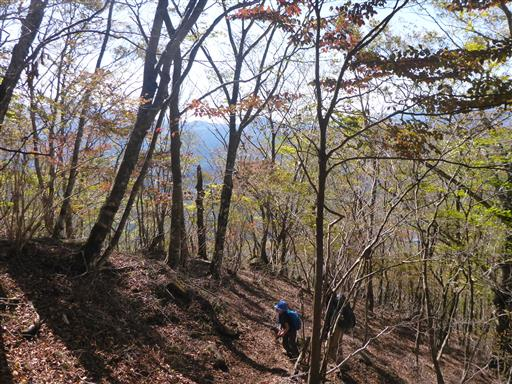
縄跳びのような木。気に入って持ち歩いている。
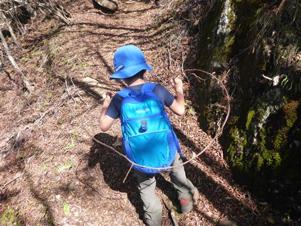
足元にリンドウの花が咲いている。
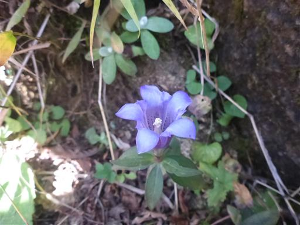
リュウノウギクだろうか？あちらこちらで秋の花が咲いている。
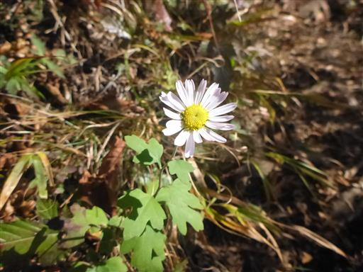
赤くてきれいな実。しかし枝にはトゲがいっぱい。
登山道のあちこちにこのトゲがあるので厄介だ。
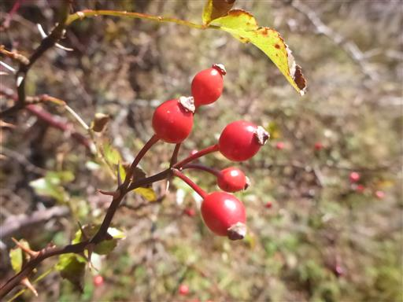
あっ、富士山。ようやく、展望が開けてくる。
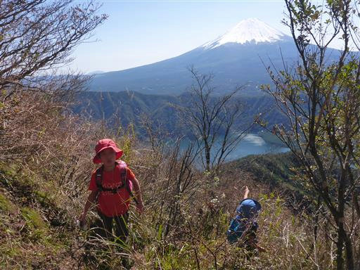
小さな岩場を超える。登山道が険しくなってきた。
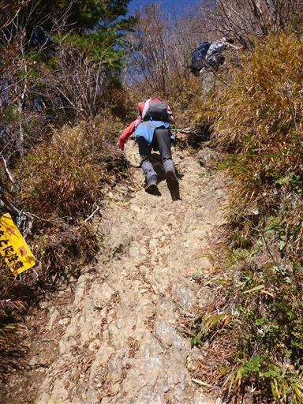
岩場を含む急な斜面を登って行く。
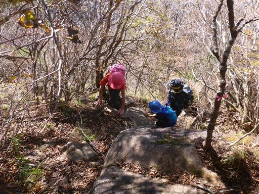
周囲の視界がどんどん広がってくる。雪頭ヶ岳山頂は目と鼻の先だ。
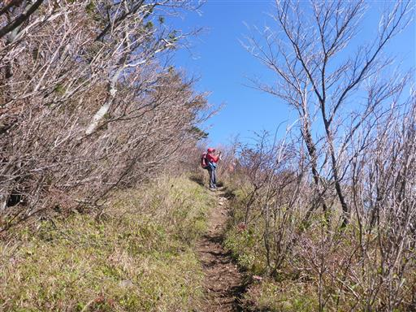
雪頭ヶ岳山頂に到着。実際の山頂はもう少し先で、ここはその手前の広場だ。
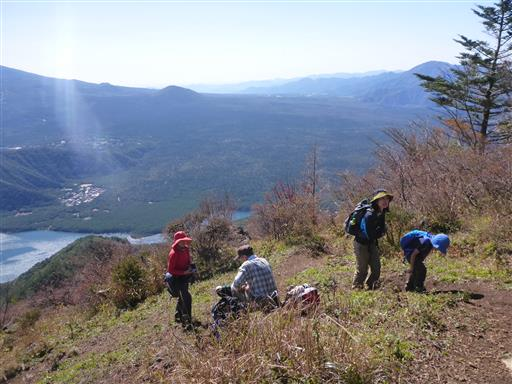
目の前に聳えるのは富士山。眼下には西湖。素晴らしい展望だ。
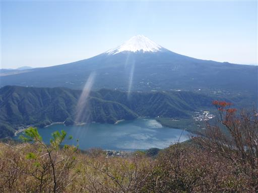
遠く天子山塊とその下に広がる広大な富士の樹海。
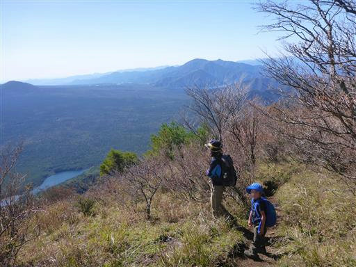
河口湖と富士吉田の町並み。
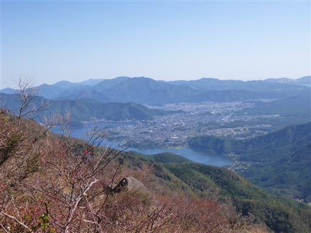
鬼ヶ岳山頂まではあと少し。山頂まで険しい登山道が続く。
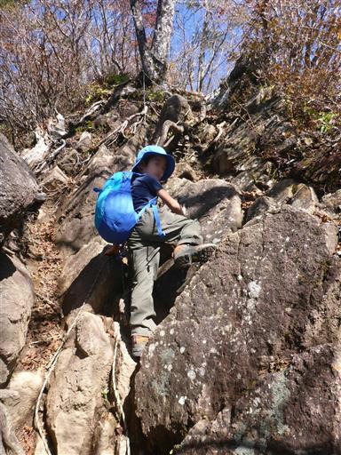
間近に見える十二ヶ岳。急斜面の崖に覆われ、一際異彩を放っている。
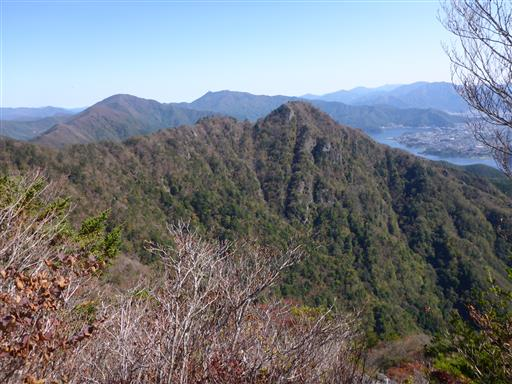
ここからは急斜面を下る。小さなアップダウンが連続する。
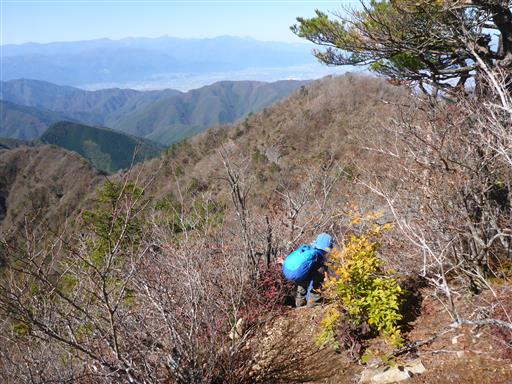
今度は梯子を登る。
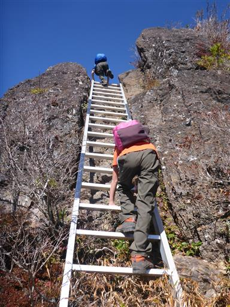
辿り着いた小ピーク。
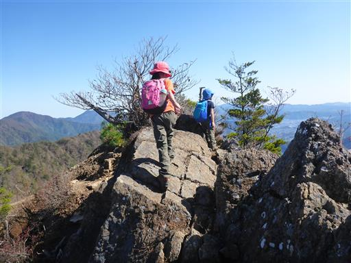
案外怖い場所だ。
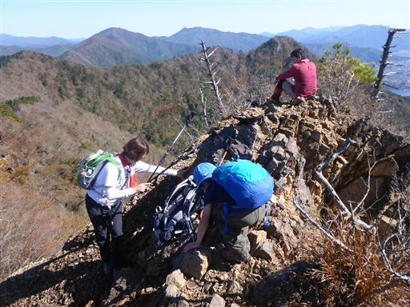
痩せ尾根を越える。両側が切れ落ちたザレ場。
子供は無警戒なのでここも怖い。
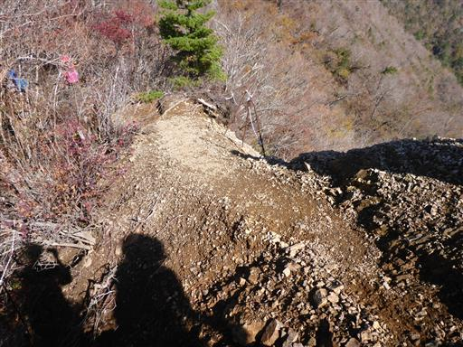
最後に一登りで鬼ヶ岳山頂に到着する。標高1738m。
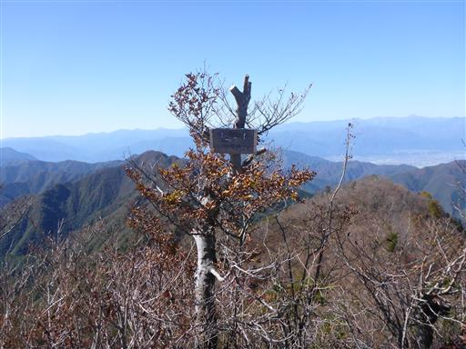
息子は即座に山頂の真ん中にある大岩に登っている。
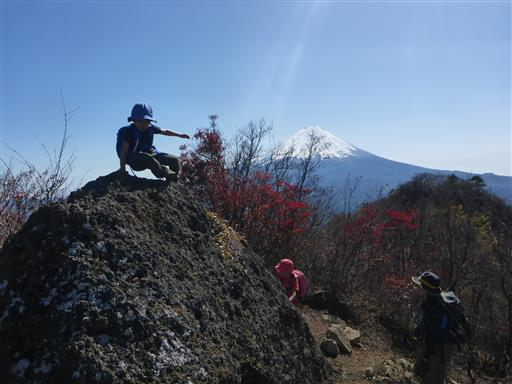
二人そろって岩に登る。登るのにちょうど良い大きさの岩だ。

山頂は正に360度の大展望台。
遠く一列に見える山脈は南アルプス。残念ながらまだ雪はほとんど積もっていない。
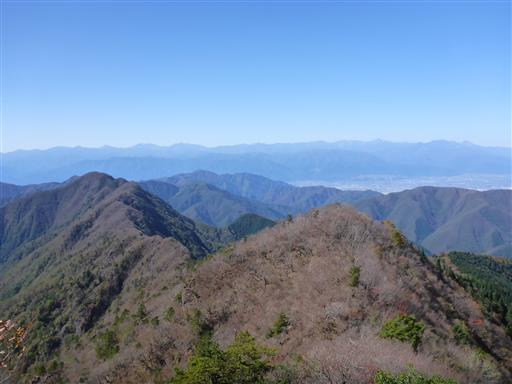
首を右に振って八ヶ岳。
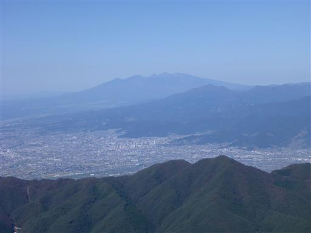
そして奥秩父の山々。遠目には特徴の少ない山脈だが金峰山や国師ヶ岳が見えている。
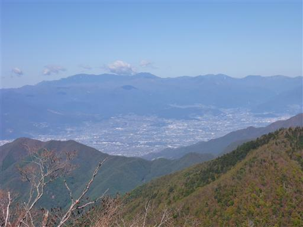
この山と繋がっている御坂山塊の山々。
左はこの間登った御坂山塊の盟主・黒岳、その右は三ツ峠山、右手前は十二ヶ岳。
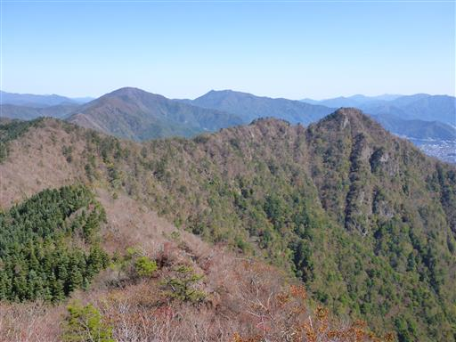
そして真正面にはもちろん富士山。
山梨百名山の標柱を探してみたが見つからなかった。どうやら選考から漏れたようだ。
西御坂山塊の最高峰で、展望抜群のこの山は名峰の資格があるように思うのだが…

息子は不思議な形の岩に登っている。何かの動物のような形だ。
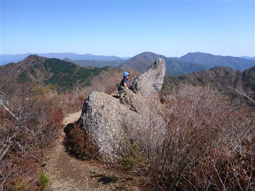
息子が何やら「虫がいっぱいいる」と言っているので覗いてみると、
小さな虫がいっぱい集まっている。一見、砂かと思った。
空を飛べる虫だが小さすぎてよく見えない。一体何者だろう？
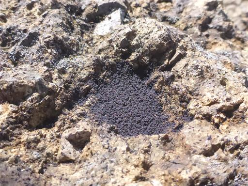
登山者の数は多くはないが次々と登って来る。
大岩の上でポーズを決めて写真を撮っている人がいたので、息子も真似して撮影。
しかし腰が引けている。
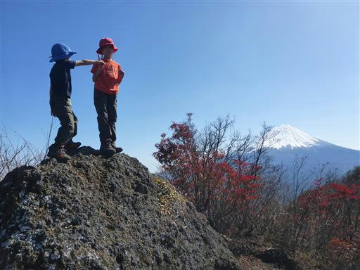
展望を満喫したら下山開始。鍵掛峠経由の周回コースを歩く。
いきなりの急斜面で綱引きのような太いロープが設置されている。
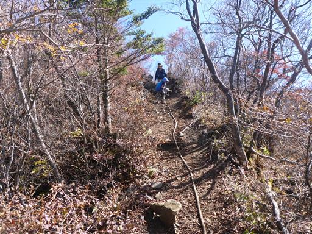
イノシシが土を掘り返した跡があちこちに見られる。
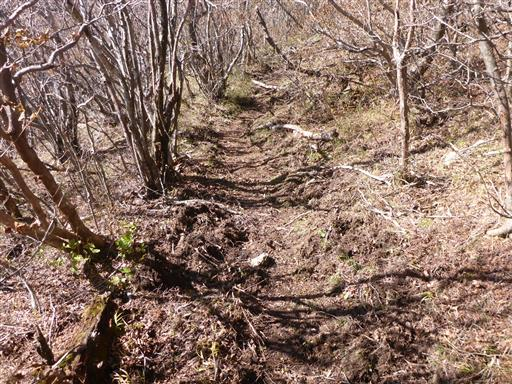
岩場を登る。この稜線はアップダウンが続くかなりの痩せ尾根だ。
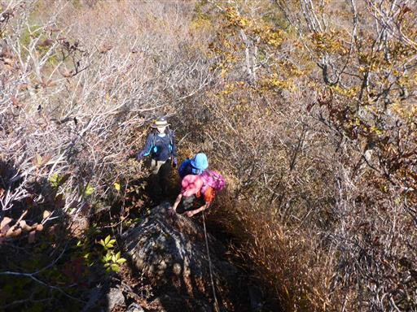
振り返って鬼ヶ岳を望む。急斜面をここまで下ってきた。
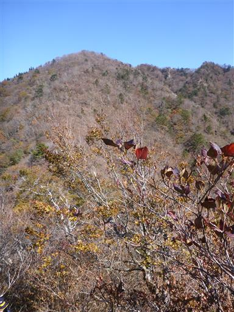
周囲は紅葉がきれいだ。
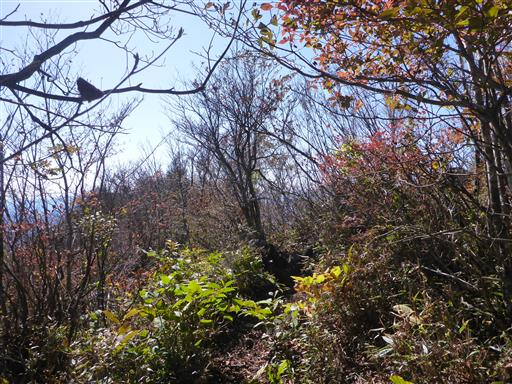
今度は岩場の下り。長いロープが垂れ下がっている。
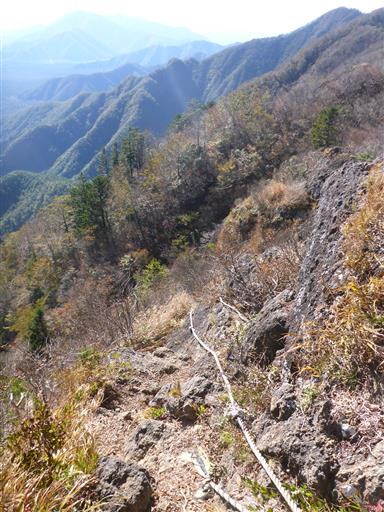
慎重に下る。
岩場は続く。
今度は岩場の登り。簡単な岩場が続く稜線で、子供たちは楽しんでいる。
複雑な形の木。横になっている木は生きているようで、倒木という訳ではなさそうだ。
さほど展望の良い稜線ではないが、ところどころ木の間から富士山が眺められる。
鍵掛峠に到着。このまままっすぐ進むと王岳に至るが、ここで左折して下山道に入る。
ちょっと道が細い。慎重に通過。
立派なブナの木。
こちらの登山道にもある「ブナ原生林」の標識。
押し合いへし合いのぎゅうぎゅう詰めのキノコ。
こちらは丸くてきれいな卵のようなキノコ。
美しい樹林帯の緑の中をジグザグに下っていく。
登山道入口に到着。
ここからは林道を20分程度歩く。
途中の沢で休憩して少し遊ぶ。子供は水が大好きだ。
西湖いやしの里根場に下山する。
茅葺屋根の家が並んでいるが、これは復元されたものだ。
巨大なフジアザミ。子供の背丈くらいの大きさだ。花もでかい。
歩いてきた稜線を振り返る。右のピークが雪頭ヶ岳あたりだ。
売店があり多くの人で賑わっている。
ロングコースを歩いたご褒美にソフトクリームを購入。
秋の景色。

西湖の駐車場に戻ってくる。
15時を過ぎてもまだ富士山は雲一つかからずきれいに見えている。
本日の天気は最高だ。
西湖の畔に下りてみる。中を覗くと小さな魚が泳いでいる。
魚の死体を発見。息子が棒でつついている。まだ新しそうだ。
本日は天候に恵まれたこともあり、素晴らしい景色を堪能できた山行だった。
また、稜線歩きは意外に痩せ尾根で、歩いていて楽しい登山道だった。